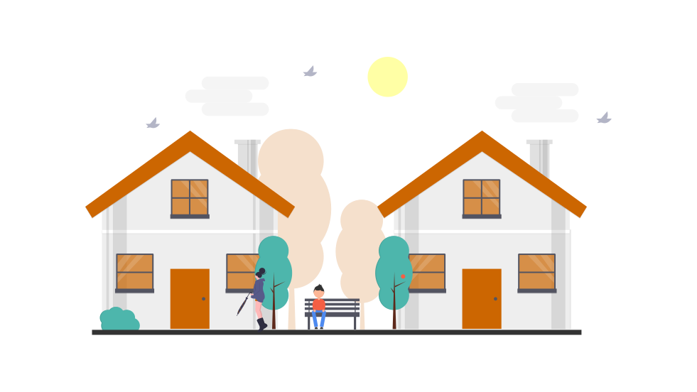

KanguroSchool, nace con la idea de formar a personas y a profesionales, que en el desempeño de sus funciones, den seguridad y confianza a las familias que en su ausencia dejen a sus hijos e hijas a su cuidado.
Misión
El propósito de la Escuela KanguroSchool, es formar profesional es que sepan transmitir los valores que contribuyen a respetar a la infancia, incentivando sus cualidades personales para que puedan en el futuro ,ejercer sus derechos y libertades para lograr una mejor convivencia en sociedad.
